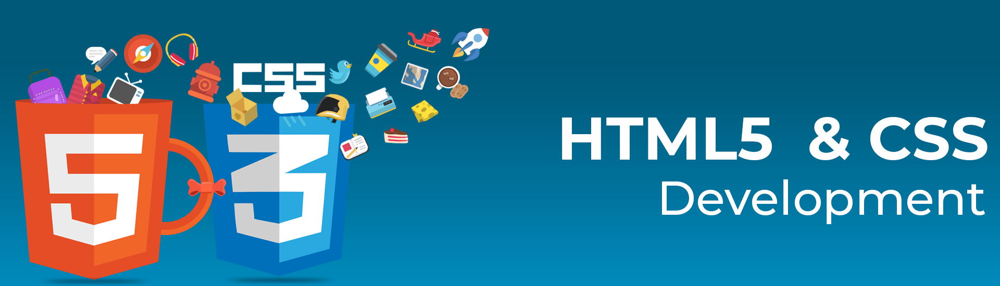

CSS3 is the latest version of the Cascading Style Sheets (CSS) language used for styling web pages. It is an evolution of CSS2, which adds new features and capabilities to help designers create more complex and sophisticated layouts.
Some of the new features in CSS3 include:
- Media queries - This feature allows designers to create responsive designs that adjust the layout of a web page based on the size of the screen it's being viewed on.
- Flexbox - This feature provides a more efficient way to lay out and align elements on a web page, especially when it comes to creating responsive designs.
- Grid layout - This feature provides a powerful way to create complex grid layouts that are flexible and responsive.
- Custom fonts - CSS3 makes it easier to add custom fonts to a web page, providing more design flexibility and creative options.
- Animations and transitions - CSS3 provides more advanced animations and transitions that can be applied to various elements on a web page, making it more interactive and engaging.
Overall, CSS3 provides designers with more tools to create beautiful and responsive web pages that are optimized for various devices and screen sizes.
